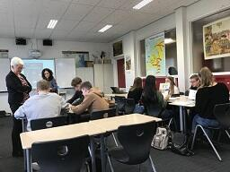
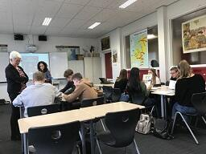
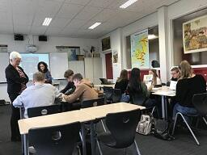

文字
背景
行間


カテゴリ:海外研修
Cecilien Gymnasium（ドイツ）とのオンライン交流会
4月13日（火）15:50～16:35 ドイツの交流校、ツェツィリアン・ギムナジウムの生徒と本校の３年生10名がZoomによりオンライン交流しました。現地は午前８時50分、歴史の授業の中で、本校の３年生２組によるSGH課題研究発表（佐倉の観光、ヘルプマーク）をライブで聞いていただき、質問やコメントをもらいました。進行は国際交流委員が務めました。短い時間でしたが、ライブでお互いの顔を見ながら交流できるというのはやはり楽しいものです。コロナ禍に負けず、これからもこのような活動を通して、更に国際感覚を身に付けていきます。

イギリス Hllyport College オンライン交流会
令和2年2月27日(土)イギリスの交流校ホリポート・カレッジの日本語クラブの生徒と佐倉高校1年生９名がGoogle Meetでのオンライン交流をしました。こちらは土曜日の19:00～20:00イギリスは朝10:00～11:00の時間帯に各自が家から参加しました。1月からショートビデオでメッセージを交換していましたが、今回初めてオンラインで顔を合わせることができました。
ホリポートのGee先生がファシリテーターを務めてくださり、簡単な自己紹介やゲーム、付箋チャット機能を使った会話をしました。これからも定期的にこのようなオンラインミーティングを開く予定です。
デュッセルドルフ大学生来校
2020.2.20 ドイツ・デュッセルドルフ大学から千葉大学に留学中のJanaさんが来校し、ＳＧＨ海外研修の事前準備のお手伝いをしてくださいました。①ドイツ・イギリス派遣生のパワーランチ（昼食を食べながら英会話）参加 ②英語の授業２Ｂ参加 ③ドイツ派遣生へのドイツ語レッスン ④ＳＧＨ課題研究プレゼンテーションＱ＆Ａ練習 など長時間にわたりお手伝いありがとうございました。Danke!


SGHオランダ海外研修報告会
12月23日(月)、１年生を対象にオランダ海外研修の報告会が行われました。参加した５名から現地でのフィールドワークや国際青年会議、課題研究の発表、異文化交流、ホームステイの様子などが報告されました。真のグローバルリーダーにはなるには、単なる語学力だけではなく、幅広い教養や問題解決能力、協働性などが求められることに気づかされたという感想も述べられました。


オランダ海外研修帰国
11月17日(日)、オランダ海外研修を終えた５名が無事に帰国しました。長時間のフライトによる疲れも見せず、爽やかな表情をしていました。この研修中、体調を崩した生徒が一人もいなく、かなり充実した研修になったようです。後日行なわれる報告会が楽しみです。
オランダ海外研修８日目
国際青年会議は、８つの班が未来の社会についてポスター発表と劇によるプレゼンテーションを行ないました。ホストの方々と駅でお別れし、アムステルダム経由で帰国の途につきます。


オランダ海外研修７日目
国際青年会議４日目。14：00までは、途中に分野別研究の時間を挟みながら、８つのプロジェクト・グループによる明日のプレゼンテーションに向けた準備が行なわれました。一度帰宅し、ホスト宅で調理した料理を持ち寄って International Cooking Fstival が行なわれました。本校の５人が作った和食は大好評。オランダ、スペイン、ドイツ、ポーランド各国の様々な料理もおいしくいただきました。
 

 オランダ海外研修６日目
国際青年会議３日目の今日は校外学習でした。２台のバスでアムステルダムに行き、午前中は４つの美術館（国立美術館 Rijksmuseum、ゴッホ美術館 Van Gogh Museum、アムステルダム市立美術館 Het Stedelijk Museum、現代アート美術館 Moco）に分かれて見学をしました。午後はホストの生徒たちと市内散策となりました。


オランダ海外研修５日目
青年会議のメインプログラムであるプロジェクトが始まりました。今年のトピックは"What will society look like in the coming decades? "です。12～13名からなる８つのグループが、「未来の社会がどうなっているか」についての発表に向けて準備を始めました。班員はScience / Economics / Social Science / Arts, Media, and Design の４分野に分かれての授業の中で学んだ内容を伝え合い、金曜日の発表に生かしていきます。午後にはCreative Workshopも行なわれ、ジャンベ（ドラム）、ズンバ（ダンス）、うた、ドラマ（劇）、書道の体験と発表が行なわれました。
オランダ海外研修４日目
ドラードカレッジでの国際青年会議が始まりました。オランダ、スペイン、ドイツ、ポーランド、日本からの５校、100名余りが参加しています。初日はオリエンテーション、異文化理解に関する講義、参加各校のプレゼンテーション（学校、街、文化紹介や自己紹介）、これから活動を共にする８つの班内で互いを良く知るためのアイスブレイカーが行なわれました。どの学校のプレゼンテーションも映像を駆使し、それぞれの土地の様子がよく伝わるものでした。佐倉高校のプレゼンは映像＋パワーポイントスライドによる学校生活、四季それぞれの行事、ポップカルチャーについての紹介でしたが、アイコンタクトもバッチリで良い紹介ができました。オランダの生徒はシンタクラウスの行事の紹介をする寸劇などもしてくれ、楽しいひとときでした。